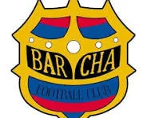
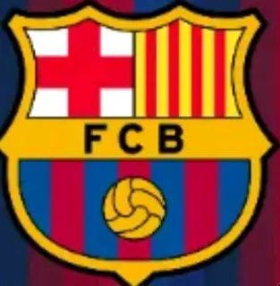
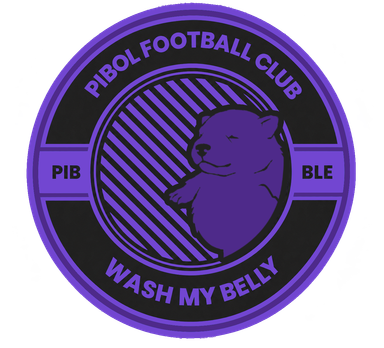

Avante League · División 2
Proximamente
Seguí la campaña de los clubes de D2, jornada a jornada.

Clubes de D2

Barcha FC
Barcelona FC- Britannia S.P.

Pibol FC- Soul FC
Tabla de puntos
| Club | Pts | PJ | PG | PE | PP | GF | GC | DG |
|---|---|---|---|---|---|---|---|---|
| Barcha FC | 0 | 0 | 0 | 0 | 0 | 0 | 0 | 0 |
| Barcelona FC | 0 | 0 | 0 | 0 | 0 | 0 | 0 | 0 |
| Britannia S.P. | 0 | 0 | 0 | 0 | 0 | 0 | 0 | 0 |
| Pibol FC | 0 | 0 | 0 | 0 | 0 | 0 | 0 | 0 |
| Soul FC | 0 | 0 | 0 | 0 | 0 | 0 | 0 | 0 |
Antes de la primera jornada, los clubes figuran en orden alfabético.
Jornadas
5 jornadas · 10 partidos · Todos contra todos a una vuelta.
Fechas y horarios por confirmar.
Partidos por jornada
Jornada 1
- Barcha FCvs.Britannia S.P.
- Barcelona FCvs.Soul FC
Libre esta jornada: Pibol FC
Jornada 2
- Soul FCvs.Pibol FC
- Britannia S.P.vs.Barcelona FC
Libre esta jornada: Barcha FC
Jornada 3
- Barcelona FCvs.Barcha FC
- Pibol FCvs.Britannia S.P.
Libre esta jornada: Soul FC
Jornada 4
- Britannia S.P.vs.Soul FC
- Barcha FCvs.Pibol FC
Libre esta jornada: Barcelona FC
Jornada 5
- Pibol FCvs.Barcelona FC
- Soul FCvs.Barcha FC
Libre esta jornada: Britannia S.P.
Estadísticas
- Partidos jugados
- 0
- Goles marcados
- 0
- Promedio por partido
- —